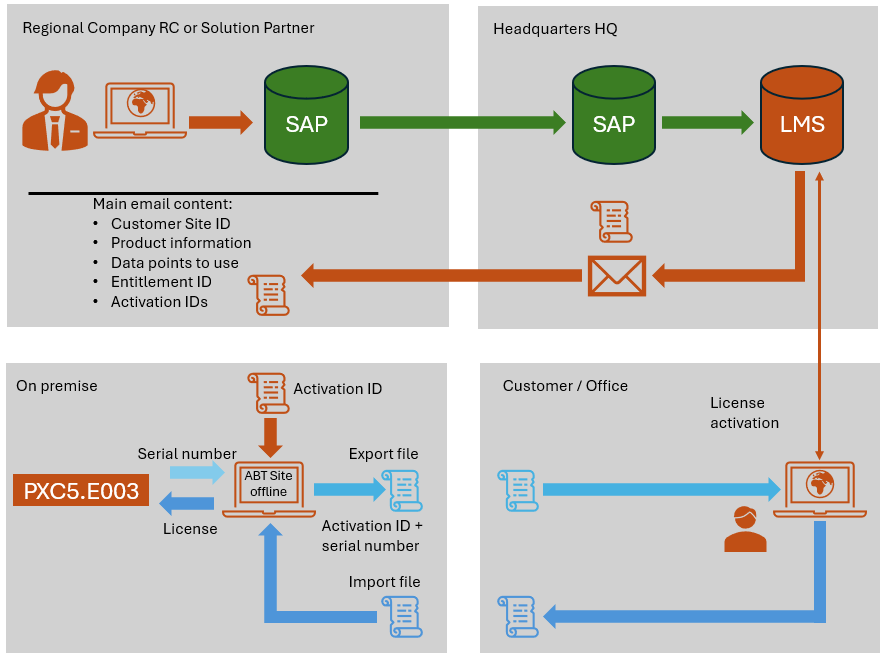
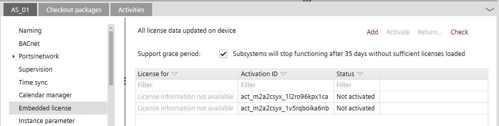
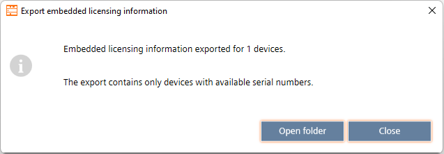

Offline activation/deactivation
This workflow must always be used if a computer is not connected to the Internet for critical environments.

1. Working on premise with ABT Site offline
- A virus-free computer with ABT Site installed is provided by the customer.
- The ABT Site computer is not connected to the Internet.
- Create a project with the building hierarchy and its devices.
- Create the control program as usual.
- Go online and read back the serial number.
2. Assigning the license to the device
- The LMS license activation ID for the device is available.
- Go to Building > Building structure.
- Select the device.
- Select the Embedded license tab.
- Copy the Activation ID from the LMS license into the clipboard.
- Paste the activation ID in the Activation ID field.

Note: If the serial number of the device is not available, the activation ID can be added but not activated. Connect to the device and upload the serial number to complete the license activation process. The StatusNot activateddisplays. Without the serial number, the export function cannot be used.
- Click OK.
- The license is successfully assigned but not activated yet.
3. Exporting licenses from ABT Site offline
- Go to Building > Building structure.
- Select a building hierarchy object.
- Right-click and select Licensing > Export embedded licensing information for the project.
- The Export embedded licensing information dialog box opens.

- Select Open folder.
- The myProject.s1ele license file is exported.
- Save the myProject.s1ele file on a transportable storage medium.
4. Activating the license on an Internet computer
- ABT Site is installed and an Internet connection is available.
- The myProject.s1ele file is stored on this computer.
- Select the myProject.s1ele file from the file explorer.
- Double-click the myProject.s1ele file to start the online registration process.
- The registration process is finished when the myProject.processed.s1ele file is created.
- Copy the new the myProject.processed.s1ele file with the license registration to transportable storage medium.
5. Importing license into ABT Site offline
- The myProject.processed.s1ele file (after license registration) is available and the virus check has been completed.
- Go to Building > Building structure.
- Select a building hierarchy object.
- Right-click and select Licensing > Import embedded licensing information for the project.
- Select the myProject.processed.s1ele file.
- Select Open.
- The license file is imported and ready to use.
- Go to Startup > Configure and download.
- In the Engineered devices tab, right-click a device that matches a discovered device.
- Select Load and then Full (device may restart).
- The license is downloaded and operable.